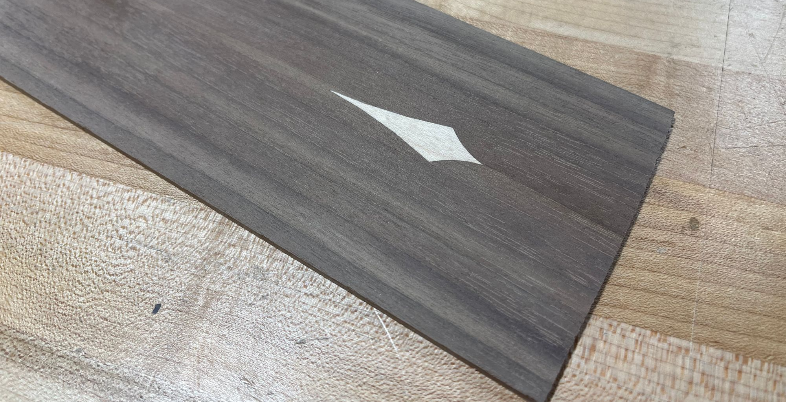
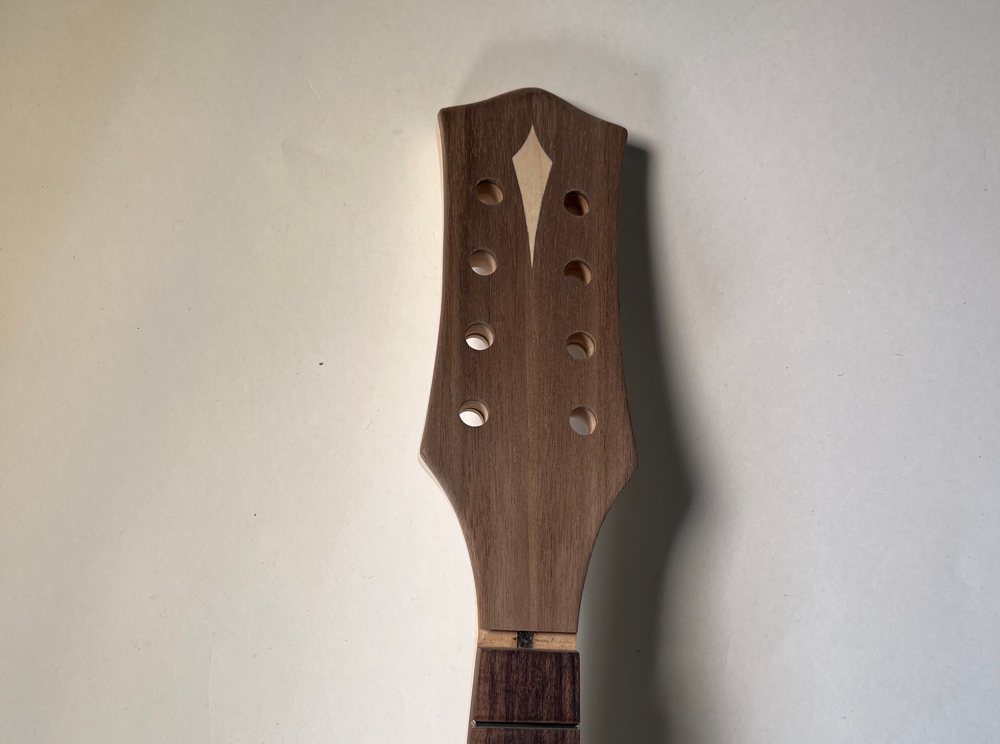
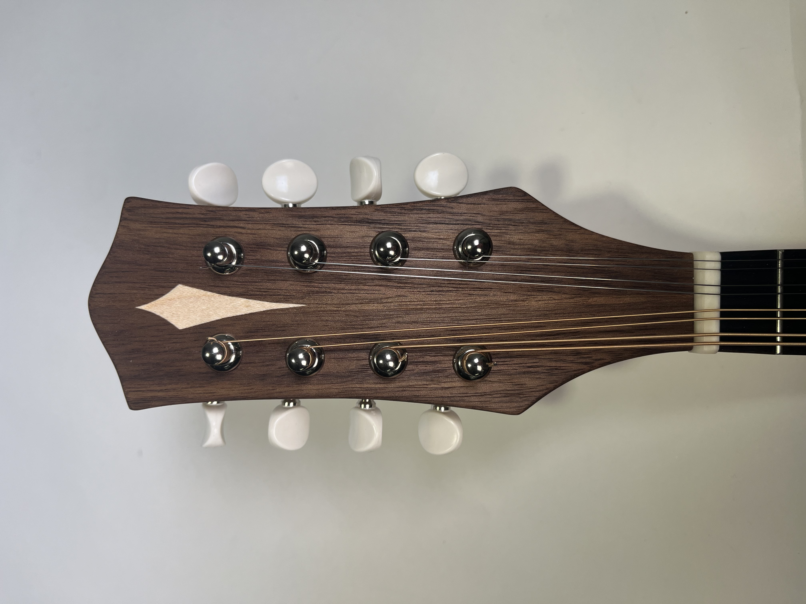
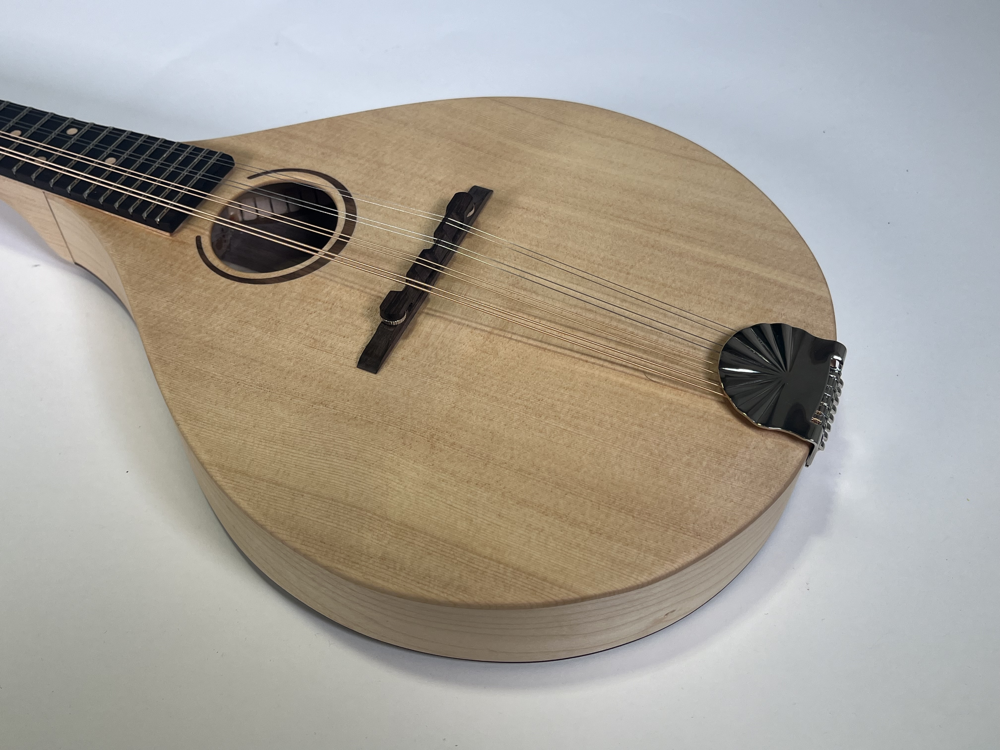
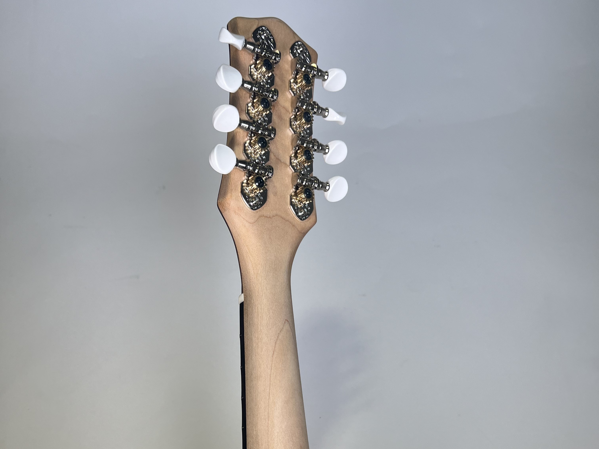

Finishing Touches
Inlayed Head Plate
I decided on another inlay design for the head plate. Since the CNC cant carve such sharp interior corners, I used an X-acto knife to trim the corners out by hand.

Inlay design
I then trimmed it to shape, glued it the head, and drilled out holes for the tuning pegs.

Attached head plate

Tuning pegs installed
After a test fit of the hardware, I realized I had to make serious modifications to the bridge I purchased — It was far too tall which meant the action on the strings was more than twice what it would be.
Finished Product
I spent several hours sanding everything to 320 grit and then applying a coat of linseed oil/beeswax finish to protect the wood and make the colors pop.



